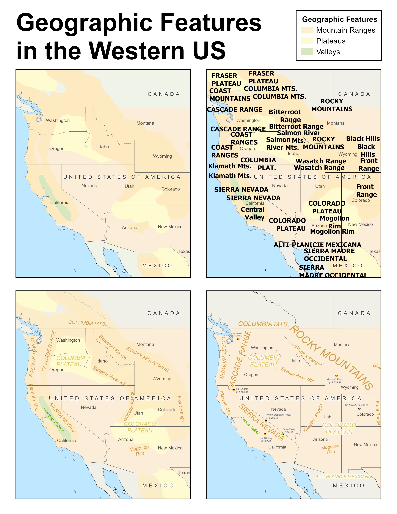
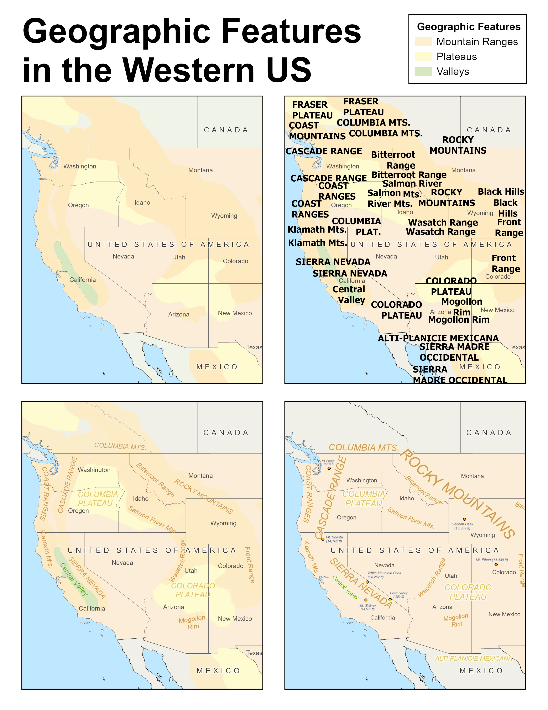
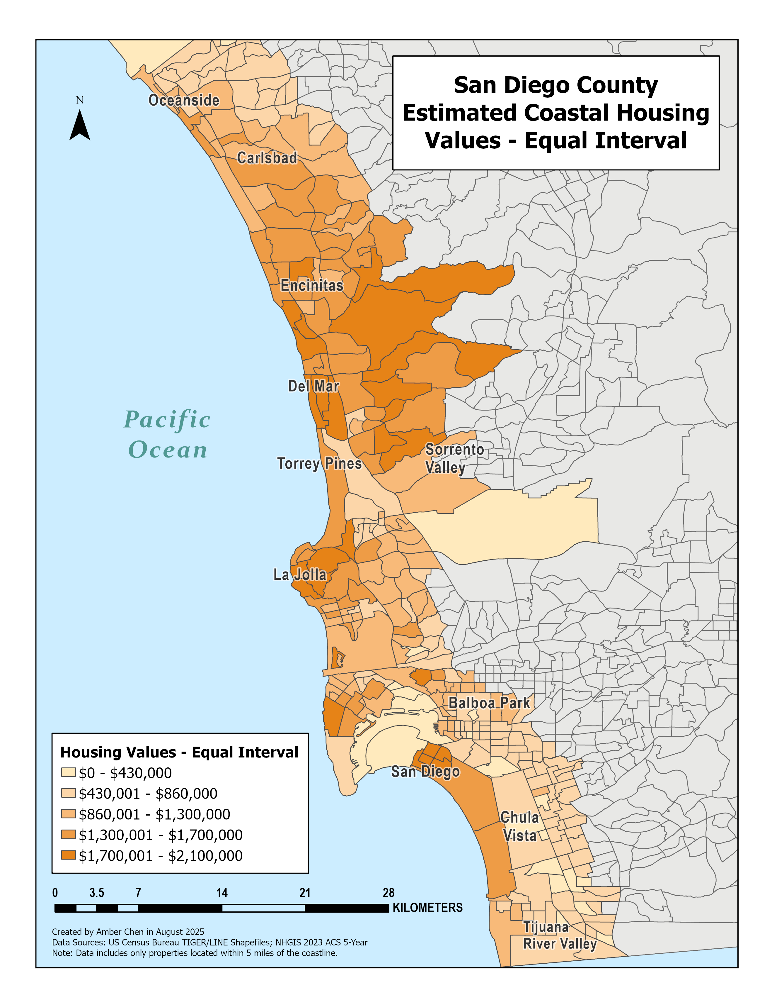
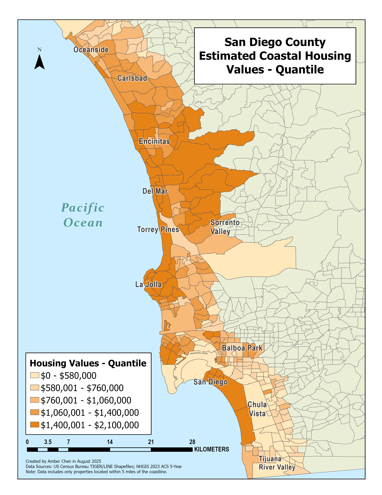
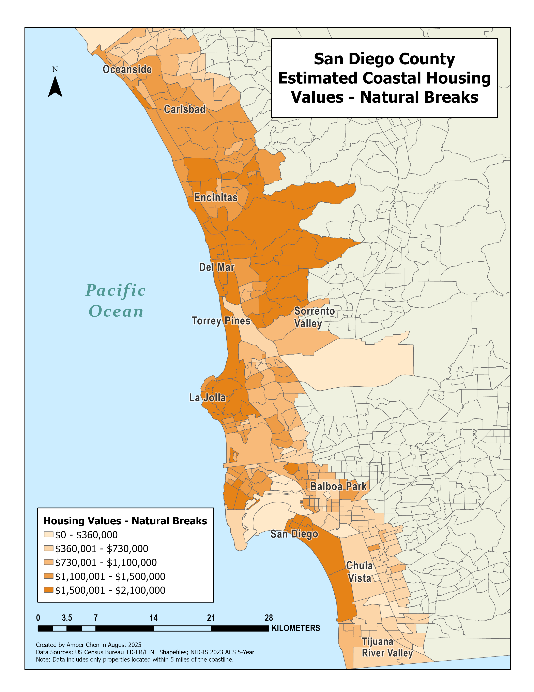
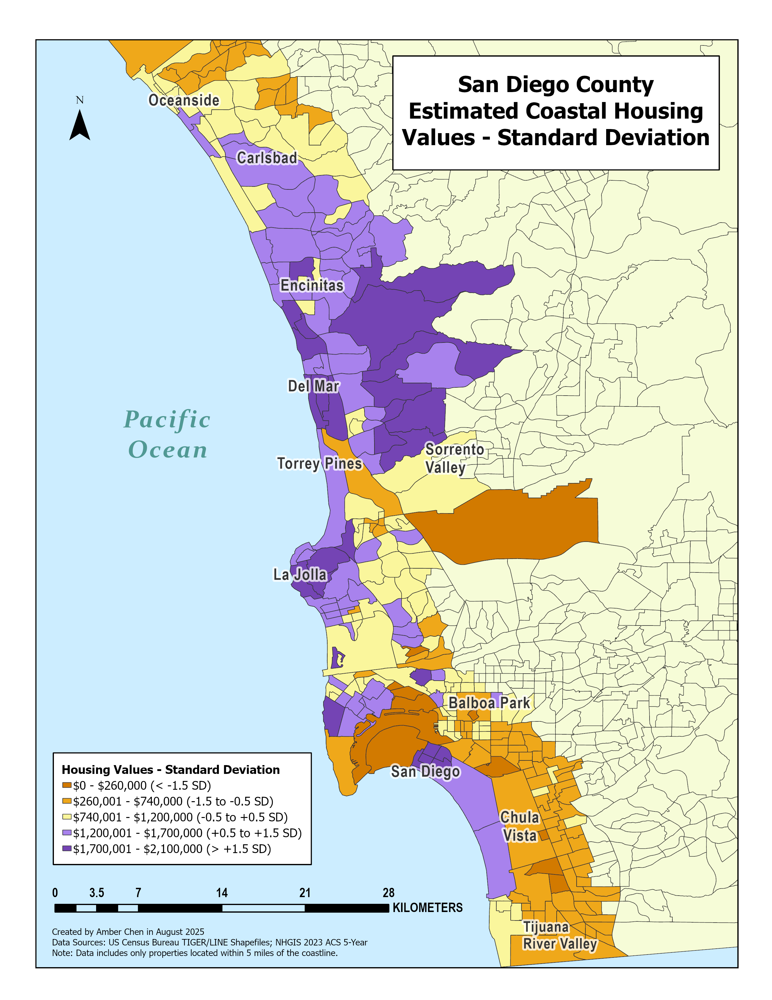

About Me
Hey there! I’m Amber, an undergraduate student majoring in Geography
and double-minoring in GIS&T and English at UCLA. My research interests
span several topics, including water and air quality in Los Angeles,
especially in the aftermath of LA’s January 2025 wildfires. I am also
highly interested in population data, both in Los Angeles and across Asia,
with a particular focus on China, Taiwan, and Tibet.
I have academic experience in using QGIS, ArcGIS, and SQL for cartography.
Some of my other skills include designing with Adobe InDesign, applying R in
statistical research, and performing data analysis with Microsoft Excel. In
the summer before my sophomore year, I interned with Asian Americans Advancing
Justice – Atlanta. I gained hands-on experience with data analysis as I worked
with large demographic datasets from the U.S. Census Bureau and the Georgia
Secretary of State.
Outside of school, I often volunteer with seniors or tutor children and adults in English.
My passion lies in helping others learn — whether through language or academic
research. As a GIS&T scholar, I am eager to share the potential of this emerging
field and inspire others to explore it.
Zion National Park Static Map
View Zion
Map Symbology & Labeling Choices
My map’s main color scheme consists of shades of red, brown, and orange
to match Zion National Park’s natural landscape. To improve overall
readability, I diversified the map’s point symbology and differentiated
various types of features from one another. By implementing more intuitively
understood symbols, I believe my new map conveys information to visitors
more efficiently than its predecessor.
Previously, the parking lot icon for NPS maps was a small half-circle that
was barely visible among all of the other features.

To make it more prominent,
I changed the icon to a white square with the letter “P,” which is commonly
understood to be the parking symbol. This makes parking information easily
accessible at a glance.
I also decided to make trailheads more prominent, by symbolizing them with
brown diamonds. This makes them easy to spot for visitors seeking hiking routes,
while preserving visual hierarchy. The diamonds are larger than the small,
half-circle dots in the NPS map, but their muted brown color prevents them from
overpowering other features.
For Zion’s surrounding areas, I symbolized towns with semi-transparent polygons
to show their extents, offering more geographic context than the NPS point symbols.
I omitted town elevation labels, which felt unnecessary for this map’s purpose.
For significant elevation points, I replaced NPS’ small dots with triangles, a
shape more intuitively associated with mountains.
Zion National Park Interactive Map
View in ESRI Map Viewer
Zion National Park is a southwest Utah nature preserve distinguished by Zion Canyon’s steep red cliffs. Zion Canyon Scenic Drive cuts through its main section, leading to forest trails along the Virgin River. The river flows to the Emerald Pools, which have waterfalls and a hanging garden. Also along the river, partly through deep chasms, is Zion Narrows wading hike.
 

San Diego Median Housing Values Map
View Equal Interval Map
Equal Interval divides the range of prices into evenly sized value intervals. While this method is easy to understand, it glosses over some of the smaller variations within my data and ignores pricing clusters that otherwise fall in unequal categories. That being said, this distribution still does a good job of illustrating the most general patterns within the data, such as where counties with more high-value homes are located (e.g. La Jolla and Rancho Bernardo, which lies east of Del Mar).

View Quantile Map
Quantile ensures an equal number of tracts in each class, which
evenly distributes colors across the map. However, one downside
is that it may place some tracts with similar values into
different classes (or vice versa – place tracts with different
values into the same class), which can distort and exaggerate
our perception of actual price differences. In this instance,
the quantile classification decreases the price range of the
class with the second-lowest values just to even out the number
of tracts in that class in comparison to the other classes.
This potentially misleads our interpretation of that class.

View Natural Breaks Map
Natural Breaks groups tracts by natural gaps in the data, producing classes
that reflect real clusters of values. Its grouping method captures meaningful
differences between housing prices, thus avoiding the issues that Equal Interval
and Quantile introduce. I think Natural Breaks best represents my dataset
because the classes accurately represent real housing value patterns and allow us
to spatially visualize overall high and lower value areas, without sacrificing
accurate representation of the variation within the data.

View Standard Deviation Map
Standard Deviation measures how far values deviate from the mean, so I chose a
diverging color scheme to better illustrate this method’s purpose. This method
strongly emphasizes a few extremely high-value tracts but compresses the
differences among the majority of tracts, which can visually exaggerate high-value
outliers. Also, since I chose to stick with 5 classes for consistency across my maps,
the standard deviation values were a little hard to read.

{kind=link}
{kind=link}
{kind=link}
{kind=link}
{kind=link}
{kind=link}
{kind=link}
{kind=link}